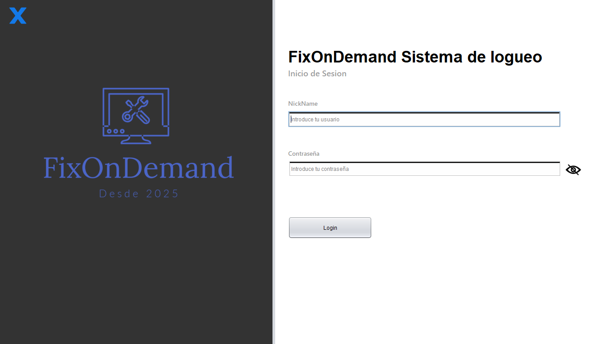
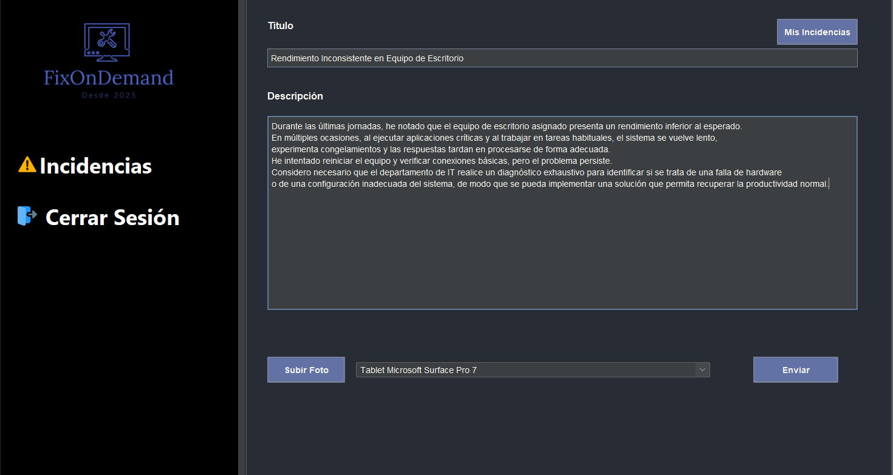
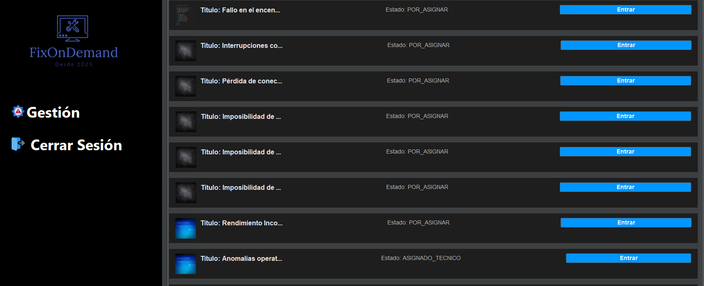
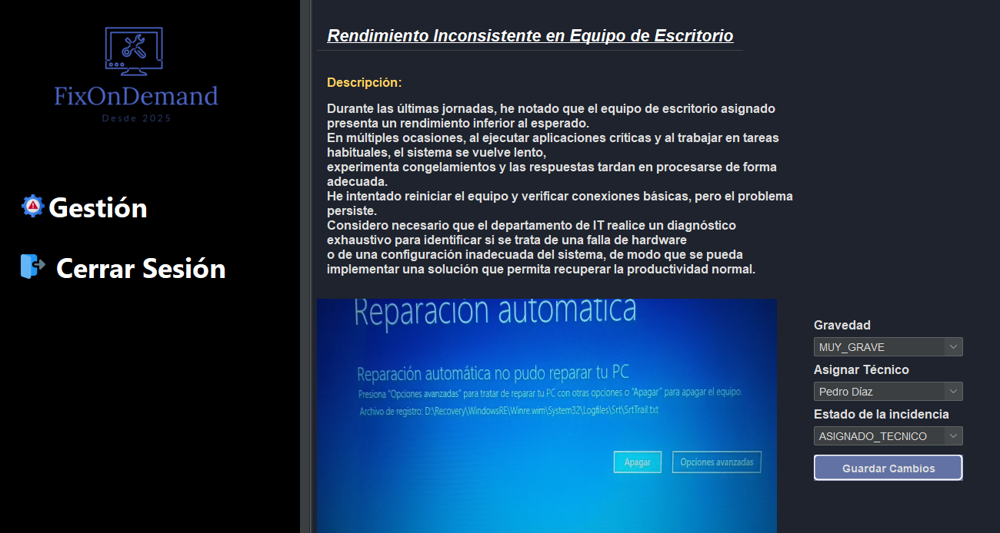
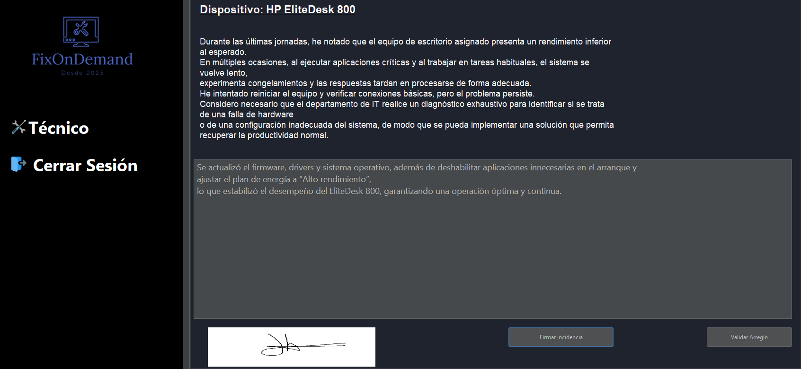
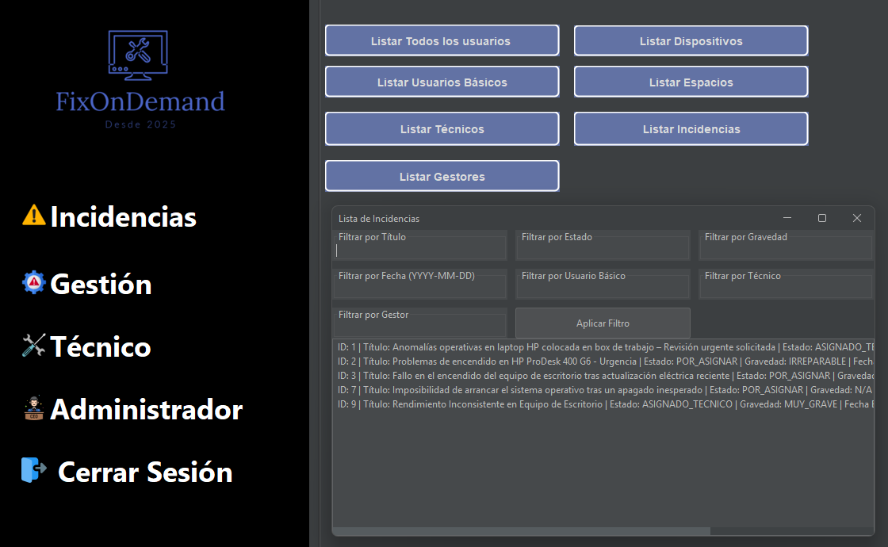

Bienvenido a FixOnDemand
Esta aplicación representa mi primera obra de arte personal. Es el resultado de fusionar datos obtenidos a través de una API REST con la magia de una interfaz gráfica tradicional. No se trató solo de funcionalidad, sino de plasmar en código todo lo aprendido hasta ese momento, pasión y creatividad.
Cada línea de este proyecto refleja el entusiasmo que siento por programar y el deseo de transformar ideas en realidades tangibles. Esta obra no nace de la intención de crear la “aplicación definitiva”, sino de capturar la esencia de lo que significa ser programador: experimentar, aprender y crear algo que, aunque modesto, refleja auténticamente mi visión y capacidad como desarrollador junior.
Ver este proyecto es como mirar atrás y recordar aquel primer “Hello World” con el que comenzó todo. Hoy, este proyecto representa un universo donde cada interacción, cada respuesta de la API y cada pixel de la interfaz, se unen para contar una historia. Es la narrativa de un soñador que decidió plasmar, a través del lenguaje del código, la belleza y la complejidad de la vida. Una declaración de intenciones y una muestra honesta de lo que soy capaz de lograr cuando dejo volar mi creatividad frente a cada desafío.
Acerca de FixOnDemand 📊✨
FixOnDemand es una aplicación dinámica que transforma la gestión de incidencias para empresas y organizaciones. Cuenta con una interfaz bonita e interactiva, y un sistema de logueo seguro que se adapta según el permiso asignado: técnico, gestor, admin o trabajador.
- ✅ Acceso seguro mediante logueo y autenticación avanzada.
- 🎨 Interfaz adaptativa que cambia según el rol del usuario.
- 💬 Lista de comandos especiales para admins, permitiendo un control total.
- 📋 Creación y seguimiento de incidencias con estados detallados.
- 🔄 Los gestores pueden escalar incidencias y asignar técnicos para resolverlas.
- ✍️ Los técnicos confirman las reparaciones mediante una "firma digital".
Tecnologías Utilizadas
Frontend
Interfaz intuitiva y dinámica basada en Java Swing, que fusiona la solidez clásica con una experiencia de usuario moderna y personalizable.
Backend
Arquitectura robusta impulsada por las innovaciones de Spring, que garantiza un rendimiento excepcional y escalable.
Base de Datos
Gestión de datos confiable y segura potenciada por MySQL, que optimiza el rendimiento y garantiza la integridad de la información.
Galería de Proyectos






Características del Sistema
Este proyecto inicial está diseñado para experimentar con patrones y técnicas modernas de desarrollo:
- 🚀 Implementación de gestión de incidencias y dispositivos empresariales.
- 🛠️ Aplicación de desacoplamiento de lógica para facilitar mantenimiento y escalabilidad.
- 📚 Exploración de programación funcional para resolver problemas de forma declarativa.
Novedades y Lanzamientos
Muy pronto podrás acceder al repositorio de GitHub.